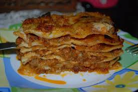

Home
Orignal Bolognese Lasagna

Description
Recommended ingredients for 6 people
- 4 vegan eggs
- flour
- vegan mince
- tomato sauce
- vegan grated cheese
- olive oil
- diary free milk
- salt
- water
Steps:
- Mix water with eggs and flour into a dough
- Use a pasta machine anche to squeeze the dough into layers
- Pan fry tomato sauce with oil and salt
- Pan fry the mince with oil
- Layer by layer put a pasta layer with mince and tomato sauce
- Cover the last layer with grated cheese
Vegan Lasagne is a vegan alternative to the traditional recipe served as first course.
Lasagne should be served warm but not too hot as coming from the owen it keeps a lot of heat for long time.